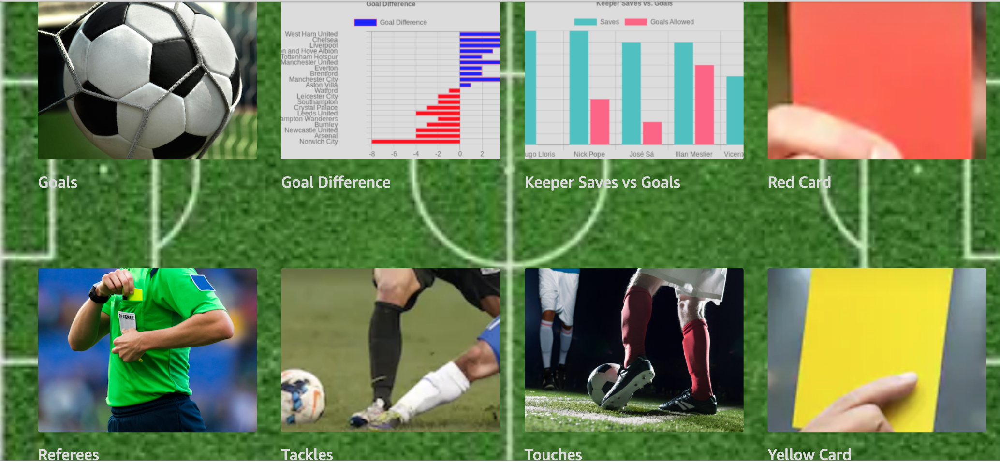

Say send chart to my phone where chart is from the list below. The chart will be sent to your Alexa App.
To see the chart open your Alexa App and click on the link.
| Say | meaning |
|---|---|
| send rank changes to my phone | how often a team changes position in the table changed |
| send goals outside the box to my phone | ratio of goals scored from inside vs outside the box |
| send player ages to my phone | average ages of the players on a team |
| send offside to my phone | how often is each team offside |
| send VAR to my phone | how often is each team helped or hurt by VAR |
| send corners to my phone | how many corners has each team had |
| send possession to my phone | how much possession has each team had |
| send referees to my phone | how many red and yellow cards has each referee given |
| send keeper saves to my phone | what percent of shots have top keepers saved |
| send striker shots to my phone | what percent of shots have top strikers made |
| send attendance to my phone | what is the attendance at the stadiums |
| send goal differences to my phone | what is each teams goal difference |
| send points by week to my phone | chart each teams point count over time |
